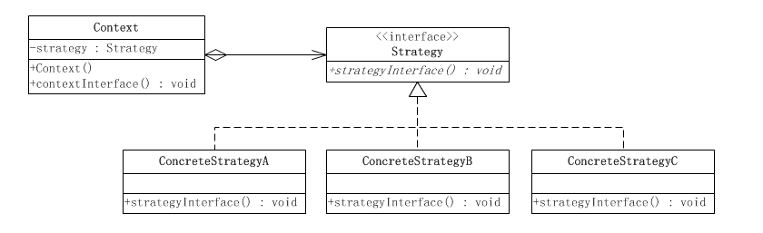

策略模式
定义：针对一组算法，将每一个算法封装到具有共同接口的独立的类中，从而使得它们可以互相替换。
策略模式属于对象行为模式，可以使得算法在不影响到客户端(算法的调用者)的情况下发生变化。策略模式通常把一个系列的算法包装到一系列的策略类里面，作为一个抽象策略类的子类，可以将策略模式理解为相同行为的不同实现而已。
场景
在软件开发中也常常遇到类似的情况，实现某一个功能有多种算法或者策略，我们可以根据环境或者条件的不同选择不同的算法或者策略来完成该功能。如查找、排序等，一种常用的方法是硬编码(Hard Coding)。在一个类中，如需要提供多种查找算法，可以将这些算法写到一个类中，在该类中提供多个方法，每一个方法对应一个具体的查找算法；当然也可以将这些查找算法封装在一个统一的方法中，通过if…else…或者case等条件判断语句来进行选择。这两种实现方法我们都可以称之为硬编码，如果需要增加一种新的查找算法，需要修改封装算法类的源代码；更换查找算法，也需要修改客户端调用代码。在这个算法类中封装了大量查找算法，该类代码将较复杂，维护较为困难。如果我们将这些策略包含在客户端，这种做法更不可取，将导致客户端程序庞大而且难以维护，如果存在大量可供选择的算法时问题将变得更加严重。这时候我们就需要使用到策略模式来设计我们的代码了。
策略模式的结构：

以上结构涉及到三个角色：
- 环境(Context):持有一个Strategy的引用,对策略进行二次封装，目的是避免高层模块对策略的直接调用
- 抽象策略类(Strategy):通常由一个接口或者抽象类实现，给出所有的具体策略类所需的接口,当各个实现类中存在着重复的逻辑时，则使用抽象类来封装这部分公共的代码
- 具体策略类(ConcreteStrategy):包装了相关算法的实现
进一步了解策略模式
策略模式仅仅封装算法，在什么情况下使用什么算法是由调用者决定的，而且策略模式的重心不是如何实现算法，而是如何组织、调用这些算法，从而让程序结构更灵活，具有更好的维护性和扩展性。
策略模式的优点：
- 策略类之间可以自由切换，由于策略类实现自同一个抽象，所以他们之间可以自由切换
- 易于扩展，增加一个新的策略对策略模式来说非常容易，基本上可以在不改变原有代码的基础上进行扩展
- 使用策略模式可以避免使用多重条件(if-else)语句。多重条件语句不易维护，它把采取哪一种算法或采取哪一种行为的逻辑与算法或行为的逻辑混合在一起，统统列在一个多重条件语句里面，比使用继承的办法还要原始和落后
策略模式的缺点：
- 客户端必须知道所有的策略类，并自行决定使用哪一个策略类。这就意味着客户端必须理解这些算法的区别，以便适时选择恰当的算法类。换言之，策略模式只适用于客户端知道算法或行为的情况
- 由于策略模式把每个具体的策略实现都单独封装成为类，如果备选的策略很多的话，那么对象的数目就会很可观
代码实例：
|
|